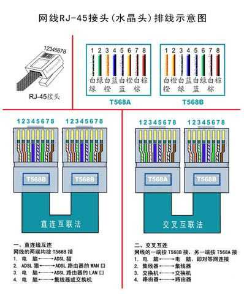

[CCNA图文笔记]-1-水晶头线序及设备互联法则
引言
这篇文章主要介绍水晶头的线序以及设备互联基础知识，压制水晶头是网络工程师最基本的一项技能，希望大家从这篇文章出发，展开一段愉快的CCNA学习之旅。
文章目录
0×1.水晶头的排线顺序
对于有线网络来说，在一个局域网里面，接触的最多的可能就是水晶头了，所以这里首先介绍一下水晶头的排线顺序和规格，现在主流的水晶头分为两种：一种是RJ-45（8针脚），就是我们经常用来插在笔记本或台式机上面上网的那个大接头；还有一种是RJ-11（4针脚），就是经常用来插在电话上面的那个小接头，也有的用来插在"猫（调制解调器）"上面通过电话线上网，第二种上网方式现在基本上已经淘汰。
这里主要介绍RJ-45，这个接头的接线顺序分为两个标准，分别是："EIA/TIA-568A标准（简称T568A）"和"EIA/TIA-568B标准（简称T568B）"，它们的线序，按照有弹片一面朝下头朝上从左往右排列如下：
T568A：绿白、绿、橙白、蓝、蓝白、橙、棕白、棕
T568B：橙白、橙、绿白、蓝、蓝白、绿、棕白、棕 （这种接法是国内比较普遍的接法）

建议大家最好使用压制水晶头的钳子实际操作一遍，先将旧的水晶头剪去，然后将再用钳子上的圆形刀口扭转剪去线头大约两厘米左右的线皮，之后按照上面的线序排序，排序好后最好将线顺直了，用钳子稍微剪去前面一部分让前端齐平，最后按照有有弹片一面朝下头朝上从左往右排列塞进水晶头，最后用钳子压制即可。
在10Mb/s和100Mb/s以太网中只使用两对导线，针脚1、2、3、6,按照T568B的标准就是1、2、3(橙白、橙、绿白)以及第6针(绿)，其中针脚1发送+，针脚2发送-，针脚3接收+，针脚6接收-，其他针脚起到了屏蔽的作用。
0×2.设备互联接线法则
这部分介绍三种不同的接线方法：直通线、交叉线、全反线。
直通线：网线的两端都是T568A或T568B，这种线适用于不同设备的互联，比如：计算机-交换机、计算机-集线器、交换机-路由器等。需要特别注意的两个特例就是：路由器和计算机属于同种设备不能用直通线，交换机和集线器也属于同种设备不能用直通线。
交叉线：一端是T568A另一端是T568B的线序，主要适用于同种设备互联，如：计算机-计算机、路由器-路由器，交换机-交换机、集线器-集线器，其中有两个特例"路由器-计算机、集线器-交换机"使用交叉线。
全反线：两端接入的RJ-45的线序完全相反(如一头为T568B那么线的另外一头就是——棕、棕白、绿、蓝白、蓝、绿白、橙、橙白，即一头为12345678另一头则为87654321)，这种线多用于连接计算机和路由器或交换机，对它们进行初始化配置。
现在大多数设备能智能识别，自适应接口状态，这就是为什么两端都是T568B标准线序的网线可以连接路由器和计算机并且还能正常通信的原因。但是如果各位要参加CCNA考试，建议严格按照上面的接线法则。